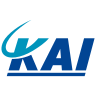
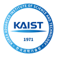
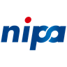

Curriculum vitae이력서
Human-centered AI인간 중심 AI
Building and researching interactive systems that connect people and AI.사람과 AI를 잇는 인터랙티브 시스템 연구·개발
Methods and tools방법과 도구
- Field interviews
- Participatory design
- Accessibility research
- Requirements definition
- 현장 인터뷰
- 참여형 설계
- 접근성 연구
- 요구사항 정의
- Interaction flows
- Inclusive design
- Multimodal interfaces
- Rapid prototyping
- Human-in-the-loop design
- 상호작용 흐름
- 포용적 디자인
- 멀티모달 인터페이스
- 빠른 프로토타이핑
- Human-in-the-loop 설계
- Agent architecture
- Retrieval-augmented generation (RAG) with BM25
- Speech recognition (faster-whisper)
- OCR (RapidOCR)
- Anomaly detection (PyOD)
- Data validation (Pandera)
- Extended reality (XR)
- Physical prototypes
- 에이전트 아키텍처
- BM25 기반 검색 증강 생성(RAG)
- 음성 인식(faster-whisper)
- OCR(RapidOCR)
- 이상 탐지(PyOD)
- 데이터 검증(Pandera)
- 확장현실(XR)
- 실물 프로토타입
- Mixed-method evaluation
- Thematic analysis
- Usability studies
- Paired benchmarks
- 혼합 방법 평가
- 주제 분석
- 사용성 평가
- 대응표본 벤치마크
- Python
- TypeScript
- SQL
- C++
- C#
- R
- Java
- Unity
- Unreal Engine
- OptiTrack
- Meta Quest Pro
- HoloLens 2
GAIA: Conversational AI for Accessible GameplayGAIA: 접근 가능한 게임 플레이를 위한 대화형 AI
Lead field research and prototype development for GAIA, a conversational game AI for players with disabilities. Recruited participants through disability organizations and, with the research team, conducted in-depth interviews with approximately 30 people and surveys with approximately 200. Designed GAIA's role to adapt to each player's abilities, tasks, and assistive technology, defining when it intervenes and which decisions stay with the player.
GAIA 현장 연구 및 프로토타입 개발 총괄. 장애인 단체 협력으로 참여자를 모집해 연구팀과 약 30명 심층 인터뷰, 약 200명 설문 조사 수행. 같은 장애 안에서도 다른 요구를 반영해 플레이어의 능력·과업·보조기술에 따라 역할이 달라지는 AI 설계, 개입 시점과 플레이어 결정 영역 정의.
DQM v1.0: Automated Enterprise Data-Quality EngineDQM v1.0: 기업 데이터 품질 자동화 엔진
Independently designed and built DQM v1.0 for a government-funded R&D project: an inspection and correction workflow that prepares source tables for the RAG and graph services of an AI data platform. Detects and corrects data errors and infers primary keys, foreign keys, indexes, and column-level quality rules. Deterministic by design: rules, statistical checks, and anomaly detectors replace an LLM so the same input always yields the same result, and uncertain candidates are routed to human review. Met all four target criteria set by SKAIWORLDWIDE in external testing by WISESTONE (August 2026).
정부 지원 R&D 과제에서 AI 데이터 플랫폼의 RAG·그래프 서비스용 원천 테이블 점검·보정 시스템 DQM v1.0 단독 설계·개발. 데이터 오류 탐지·보정과 기본키·외래키·인덱스·컬럼 단위 품질 규칙 자동 추론. LLM 대신 규칙·통계 검사·이상 탐지기 기반의 결정론적 탐지로 동일 입력에 동일 결과 보장, 불확실한 후보는 사람 검토 큐로 분리. 와이즈스톤 외부 시험(2026.08)에서 스카이월드와이드 목표 기준 4개 항목 모두 충족.
The Golden Tewak: A Heritage Game Concept Made with Haenyeo CommunitiesThe Golden Tewak: 해녀 공동체와 함께 만든 문화유산 게임 콘셉트
Co-developed The Golden Tewak, a serious-game concept on haenyeo diving practice, ecological knowledge, and community values, through fieldwork and participatory workshops in Jeju. Synthesized the field research, developed the game mechanics and narrative, and reviewed the concept with the community. Shaped the breathing mechanic, platform, and visuals through two co-design workshop cycles and a four-day design sprint.
제주 현장 조사와 참여형 워크숍을 바탕으로 해녀의 물질·생태 지식·공동체 가치를 담은 기능성 게임 콘셉트 The Golden Tewak 공동 개발. 연구 결과 종합, 게임 메커니즘·서사 개발, 공동체 검토 수행. 공동 설계 워크숍 2회와 4일간의 디자인 스프린트로 호흡 메커니즘, 플랫폼, 시각 디자인 구체화.
Real-Time Spatial Adaptation for XR InterfacesXR 인터페이스를 위한 실시간 공간 적응
Implemented adaptive placement and visual-haptic feedback for an XR interface that responds to room geometry, obstacles, and user position, and integrated both into an international research consortium's system.
국제 컨소시엄 연구에서 공간 구조·장애물·사용자 위치에 반응하는 XR 인터페이스의 적응형 배치와 시각·햅틱 피드백 구현 및 연구 시스템 통합.
KF-21 Camouflage Design and Detectability AnalysisKF-21 위장 디자인 및 피탐성 분석
Developed camouflage color schemes and patterns for the KF-21 Boramae and contributed to the image-based detectability analysis, comparing proposals across altitude, terrain, and weather conditions with environmental imagery and simulation. Selected design directions adopted in the sponsored project's deliverables.
KF-21 보라매 위장 색상·패턴 개발 및 영상 기반 피탐성 분석 수행. 환경 이미지와 시뮬레이션으로 고도·지형·기상 조건별 제안 비교. 선정된 디자인 방향이 산학 과제 결과물에 반영.

Korea Aerospace Industries (KAI)한국항공우주산업(KAI)IoT Roadside Sensing and AI Traffic TrackingIoT 도로변 센싱 및 AI 교통 객체 추적
Developed a roadside sensing prototype end to end, from IoT hardware and a 3D-printed enclosure to an AI traffic-tracking pipeline. Handled data preprocessing, detection flow, and anchor-box tuning so the sensor and the model worked as one system.
IoT 하드웨어, 3D 프린팅 외장 케이스, AI 교통 객체 추적 파이프라인을 아우르는 도로변 센싱 프로토타입 개발. 센서와 탐지 모델 일체화를 위한 데이터 전처리, 탐지 흐름 설계, 앵커 박스 튜닝 수행.
Top 3 Finalist (Solo) – KRAFTON FDE TrackTop 3 이내 선정(개인 참가) – 크래프톤 FDE 트랙
Placed within the top 3 as a solo entrant. Defined requirements with virtual stakeholders, then built and tested a working application with AI agents, completing the blind-review submission in under four hours.
개인 참가로 Top 3 이내 선정. 가상 이해관계자와 요구사항 정의, AI 에이전트로 작동하는 애플리케이션 개발·검증, 블라인드 심사 제출물까지 4시간 내 단독 완성.
Outstanding Presentation Paper Award – Accessibility AI Research우수발표논문상 – 접근성 AI 연구
Second author. Derived accessibility requirements and design principles for game AI from the responses of 112 players with disabilities; framed the study around accessibility AI, analyzed barriers, and formulated the principles.
제2저자. 장애인 플레이어 112명의 응답을 바탕으로 게임 AI 접근성 요구사항과 설계 원칙 제시. 접근성 AI 관점의 연구 설계, 장벽 분석, 설계 원칙 도출 담당.
Top Excellence Award (1st Place) – Education4.0 Q TA Report최우수상(1위) – Education4.0 Q 조교 활동보고서
Planned and ran question-centered course support under KAIST's Education4.0 Q teaching and learning model, and authored the TA activity report.
KAIST Education4.0 Q 교수학습 모델 기반 질문 중심 수업 지원 기획·운영 및 조교 활동보고서 작성.

KAISTKAISTSelected Climate-Tech Venture Team기후테크 창업팀 선정
Led venture planning, AI modeling, and patent development for Glean, an AR recycling-reward service, as team representative in KAIST's Asan UniverCT program. Selected for mentorship and venture-building support from the Asan Nanum Foundation.
팀 대표로 KAIST 아산 UniverCT 프로그램에서 AR 재활용 리워드 서비스 Glean의 사업 기획, AI 모델링, 특허 개발 총괄. 기후테크 창업팀으로 선정되어 아산나눔재단 멘토링·사업화 지원 획득.
Grand Prize (Handong Global University President's Award) – Media-Façade Division대상(한동대학교 총장상) – 미디어 파사드 부문
Led the Unreal Engine implementation of the team's working media-façade prototype for a large architectural display.
대형 건축물 디스플레이용 미디어 파사드 프로토타입의 Unreal Engine 구현 총괄.
Excellence Award – Eye-Tracking VR Research우수상 – 시선 추적 VR 연구
Fourth author of "Eye-tracking-based VR interactive game for eye exercises." Researched and developed its gaze-controlled VR prototype.
「안구 운동을 위한 시선 추적 기반 VR 인터랙티브 게임」 제4저자. 시선 제어 VR 프로토타입 연구·개발.
Excellence Award (Skonec Entertainment CEO Award) – Metaverse Developer Contest우수상(스코넥엔터테인먼트 대표이사상) – 메타버스 개발자 경진대회
Designed the VR content and user experience for Watchers, a gaze-controlled Meta Quest Pro application for eye-muscle rehabilitation exercises (Team EyeCU).
Team EyeCU 소속으로 안구 근육 재활 운동용 Meta Quest Pro 시선 제어 애플리케이션 Watchers의 VR 콘텐츠·사용자 경험 설계.

National IT Industry Promotion AgencySkonec Entertainment과학기술정보통신부한국메타버스산업협회정보통신산업진흥원스코넥엔터테인먼트Handong Global University President's Award한동대학교 총장상
Led Team CGreen's venture proposal and competition submission for Glean, an XR recycling-reward service, winning the Handong Global University President's Award.
Team CGreen 대표로 XR 재활용 리워드 서비스 Glean의 창업 제안·출품 총괄, 한동대학교 총장상 수상.
Excellence Presentation Award – VR Exposure Research우수발표상 – VR 노출 연구
Second author of research on staged VR exposure for cynophobia. Co-designed the step-wise adjustment of distance to a virtual dog that controls exposure intensity.
개 공포증 치료를 위한 단계적 VR 노출 연구 제2저자. 가상 개와의 거리를 단계별로 조절해 노출 강도를 제어하는 방식 공동 설계.
Top 14 Finalist – Global Startup Challenge본선 14팀 선정 – 글로벌 창업 챌린지
Advanced to the final 14 of 152 applicant teams. Co-developed the team's blockchain venture proposal and presented it to business-school, venture-capital, and industry judges.
152개 지원팀 중 본선 14팀 선정. 블록체인 창업 제안서 공동 작성 및 경영대학·벤처투자·산업 전문가 심사단 대상 발표.
Korea Advanced Institute of Science and Technology (KAIST)한국과학기술원 (KAIST)
Korea Advanced Institute of Science and Technology (KAIST)한국과학기술원 (KAIST)
Handong Global University한동대학교
Ateneo de Manila University아테네오 데 마닐라 대학교
21 publications: 7 as first or sole author, 3 as co-first author or with equal contribution, and 11 as co-author. 총 21편: 제1저자 또는 단독 저자 7편, 공동 제1저자 또는 동등 기여 3편, 공저자 11편
2026
1 (2026). Designing and evaluating an AI assistant for players with disabilities: Empirical findings and future design implications. Master's thesis, Korea Advanced Institute of Science and Technology. Advisor: Young Yim Doh. (Sole author)(단독 저자) MGCT 26010 KAIST Library ↗
Master's research on how game AI can support accessibility by combining information, perception, and execution assistance matched to each player's abilities. 석사 연구. 정보 제공·지각 보조·조작 지원을 플레이어 능력에 맞게 조합해 게임 접근성을 높이는 AI 지원 방법 탐구.
2, & Doh, Y. Y. (2026). Toward Ludic AI: Proposing an evaluation framework for the ludic competence of game-playing AI. Digital Game Research, 2(1), 29–59. (First author)(제1저자) DOI ↗ Article ↗
Defines ludic competence through three behavioral dimensions for evaluating whether game AI sustains shared play rather than simply pursuing victory. 승리 추구를 넘어 함께하는 놀이를 지속하는 게임 AI를 평가하기 위한 놀이 역량의 3가지 행동 차원 정의.
3, Lee, S., Jeong, S., & Doh, Y. Y. (2026). Patterns of preference for AI assistants in game accessibility among players with disabilities: An exploratory analysis of functional barriers and intervention timing. Journal of Korea Multimedia Society, 29(6), 885–904. (First author)(제1저자) DOI ↗ DBpia ↗
Surveyed 112 players with disabilities, finding the strongest preference for AI that reduces setup effort and automates accessibility support. 장애인 플레이어 112명 설문 조사. 초기 설정 부담을 줄이고 접근성 지원을 자동화하는 AI에 대한 선호가 가장 높음을 규명.
4, Seo, G., Jeong, S., & Doh, Y. Y. (2026). Design principles of Game AI Assistant (GAIA) for players with disabilities: Accessibility needs and ethical concerns. Proceedings of the 31st International Conference on Intelligent User Interfaces (IUI '26), 144–155. ACM. (First author)(제1저자) DOI ↗
Examines how intervention timing, interaction modality, customization, and automation shape immersion, player agency, and a sense of achievement. AI 개입 시점·상호작용 방식·맞춤 설정·자동화가 몰입, 플레이어 주도권, 성취감에 미치는 영향 분석.
5Lee, S., , Jeong, S., & Doh, Y. Y. (2026). Design principles for game AI assistant: Analyzing functional barriers and accessibility requirements of players with disabilities. Korea Game Society Spring Conference 2026, 83–88. (Second author)(제2저자)
Organizes responses from 112 players with disabilities into a three-level requirements framework that prioritizes basic access, then reduced effort, then personalized assistance. 장애인 플레이어 112명의 응답을 3단계 요구사항 프레임워크로 체계화. 기본 접근 보장, 사용 부담 완화, 개인화 지원 순의 설계 우선순위 제시.
2025
6Park, E., , Eum, K., Choi, E., Oh, H., & Doh, Y. Y. (2025). Press start to continue: A thematic analysis of the iterative process of hardcore players with disabilities adapting to gameplay difficulties. Extended Abstracts of the CHI Conference on Human Factors in Computing Systems (CHI EA '25), Paper 446, 7 pp. ACM. (Co-first author)(공동 제1저자) DOI ↗
Traces how dedicated players with disabilities combine personal strategies, assistive tools, and social support, and why inflexible game environments can drive them to stop playing. 장애인 하드코어 플레이어의 개인 전략·보조 도구·사회적 지원 활용 과정과, 경직된 게임 환경이 플레이 중단으로 이어지는 원인 분석.
7, & Doh, Y. Y. (2025). The identity and role of game NPCs: Past, present, and future. [Conference presentation]. Proceedings of the 1st DiGRA Korea Conference, 1–39. (First author)(제1저자) Source ↗
Traces the conceptual history of NPCs and argues that, as they gain autonomy, they must still preserve game rules, character identity, and player agency. NPC 발전사 검토. 자율성이 높아져도 게임 규칙, 캐릭터 정체성, 플레이어 주도권을 유지해야 함을 논증.
8Oh, H., Eum, K., Park, E., , Seo, J., Choi, E., & Doh, Y. Y. (2025). RAG-enhanced LLM chatbot for game accessibility: Development and evaluation of GAIA. HCI Korea 2025, 254–259. (Fourth author)(제4저자) DBpia ↗
Evaluated a Street Fighter 6 RAG assistant, showing that high retrieval similarity does not guarantee accurate, usable guidance during play. Street Fighter 6용 RAG 어시스턴트 평가. 높은 검색 유사도가 정확하고 실행 가능한 플레이 안내를 보장하지 않음을 규명.
2024
9Choi, E., , & Doh, Y. Y. (2024). Prompting-based LLM framework for ethical decision-making in the trolley dilemma: Embedding Hofstede's cultural dimensions theory (PLETH). Korean Artificial Intelligence Association Fall Conference 2024, Poster 38. (Co-first author)(공동 제1저자)
PLETH, a cultural-prompting framework, improved the cultural relevance and consistency of language-model responses and surfaced ethical tensions where cultural priorities conflict with human-rights norms. 문화 프롬프팅 프레임워크 PLETH로 언어 모델 응답의 문화적 적합성과 일관성 향상. 문화적 우선순위와 인권 규범이 충돌하는 지점의 윤리적 쟁점 도출.
10Eum, K., Park, E., , & Doh, Y. Y. (2024). GAIA: A game AI assistant service framework integrating problem-solving and emotion regulation strategies. Korea Computer Graphics Society Conference 2024, 103–104. (Co-first author)(공동 제1저자) DBpia ↗
Proposes the GAIA framework, which separates practical problem-solving from emotion-regulation support to match help to each player's needs. 문제 해결 지원과 감정 조절 지원을 분리해 플레이어 필요에 맞춰 돕는 GAIA 프레임워크 제안.
11Park, E., , Kim, K., Yi, H. W., Lootah, M. K., & Doh, Y. Y. (2024). Challenges and opportunities of game NPC research using LLM: A scoping review. Korea Game Society Spring Conference 2024, 165–170. (Second author)(제2저자)
Scoping review of six early LLM-based NPC studies, identifying open challenges in hallucination, latency, memory, and evaluation and calling for clearer design rationales. 초기 LLM 기반 NPC 연구 6편 주제범위 문헌고찰. 환각·응답 지연·기억·평가의 미해결 과제 정리 및 명확한 설계 근거 제시 필요성 제기.
12Kim, Y. B., & (2024). A technical literature review of distributed management structure: Focusing on the multi-label system of HYBE Co., Ltd. Korea Society of Technology Innovation Spring Conference 2024, Abstract Book, 69. (Corresponding author)(교신저자)
Reviews HYBE's multi-label system as a decentralized operating model, focusing on decision rights, creative autonomy, shared infrastructure, and coordination. HYBE 멀티 레이블 체제를 분권형 운영 모델로 보고 의사결정 권한, 창작 자율성, 공유 인프라, 조직 간 조정 중심으로 검토.
13Kim, Y. B., & (2024). From BigHit to HYBE: Sentiment analysis and strategic transition through news data. Korea Society for Innovation Management & Economics Summer Conference 2024, Abstract Book, 73. (Corresponding author)(교신저자)
Analyzed 45,393 Korean news articles to trace media sentiment through BigHit's transition to HYBE, focusing on narratives of innovation and internal conflict. 국내 뉴스 기사 45,393건 분석으로 BigHit의 HYBE 전환기 미디어 논조 추적. 혁신과 내부 갈등 보도 중심.
2023
14, Yoo, S., Lee, Y., Kim, Y., Kim, H., & Han, D. (2023). Analysis of the effects of positive and negative VR game contents on enhancing environmental awareness based on self-reliant and team-based play styles. Journal of the Korea Computer Graphics Society, 29(3), 137–147. (First author)(제1저자) DOI ↗
Four-condition VR study with 65 students: content sequence and social play influenced environmental awareness more than positive or negative framing. 학생 65명 대상 4개 조건 VR 실험. 긍정·부정 프레이밍보다 콘텐츠 제시 순서와 사회적 플레이 방식이 환경 인식에 더 큰 영향을 미침을 확인.
15Yoon, D., Park, S., Song, Y., , & Chung, D. (2023). Methodology for improving the performance of demand forecasting through machine learning. Research Square [Preprint; not peer reviewed]. (Fourth author)(제4저자) Preprint ↗
Forecasting pipeline combining clustering, LASSO, and LSTM that outperformed comparison models across 2,548 retail products. 군집화·LASSO·LSTM 결합 예측 파이프라인으로 소매 상품 2,548개에서 비교 모델 대비 우수한 성능 달성.
16, Kim, H., Kim, Y., Kim, M., Kim, S., & Han, D. (2023). A study on the effect of group commitment on improving awareness of recycling through gamification. HCI Korea 2023, 626–630. (First author)(제1저자) DBpia ↗
All cooperative groups completed a recycling task that no solo participant finished. 개인 참여자가 아무도 완수하지 못한 재활용 과업을 모든 협동 집단이 완수함을 확인.
17Kim, Y., , Lee, Y., Kim, H., Lee, Y., & Han, D. (2023). Enhancing participation in rehabilitation for diplopia through gamification. Korea Computer Graphics Society Conference 2023, 149–150. (Second author)(제2저자) DBpia ↗
Seven-person pilot of gamified eye exercises: interest and anticipation stayed high with gamification but declined under conventional exercise. 안구 운동 게임화 예비 연구(7명). 일반 운동 조건에서 떨어진 흥미와 기대감을 게임화 조건에서 유지.
18Lee, Y., Kim, Y., Kim, H., , Lee, Y., Im, J., & Han, D. (2023). Eye-tracking-based VR interactive game for eye exercises. Proceedings of the Korea Multimedia Society Fall Conference, 26(2), 21–23. (Fourth author)(제4저자)
Gaze-controlled VR prototype that turns saccade and smooth-pursuit exercises into gameplay; feasibility supported by feedback from 24 elementary-school students. 단속성·부드러운 추적 안구 운동을 게임으로 구현한 시선 제어 VR 프로토타입 개발. 초등학생 24명 피드백으로 구현 가능성 확인.
2022
19Yoo, S., , Kim, H., Lee, Y., Kim, S., Kim, Y., Han, S., & Han, D. (2022). A study on systematic exposure with space and distance factors in VR therapy of cynophobia. Proceedings of the Korea Multimedia Society Spring Conference, 25(1), 17. (Second author)(제2저자)
Proposes staged VR exposure that adjusts the distance to a virtual dog to control exposure intensity, with reduced fear reported. 가상 개와의 거리 조절로 노출 강도를 단계적으로 제어하는 VR 노출 설계 제안, 공포 감소 효과 보고.
20Park, S., Yoon, D., Song, Y., , & Chung, D. (2022). Enhancing predictive-model performance through clustering. Korean Society of Management Information Systems Spring Joint Conference, 267–273. (Fourth author)(제4저자) eArticle ↗
Clustered 1,624 retail products and compared five predictive models, showing cluster-based forecasting to be a promising approach. 소매 상품 1,624개 군집화 후 예측 모델 5종 비교, 군집 기반 예측 접근법의 유효성 제시.
21Yoon, D., Park, S., Song, Y., , & Chung, D. (2022). A method for enhancing demand forecasting performance by combining regression coefficient shrinkage, clustering, and LSTM. Korea Intelligent Information Systems Society Fall Conference 2022, Abstract, 35. (Fourth author)(제4저자) DBpia ↗
Forecasting pipeline for 2,693 retail products combining clustering, cluster-specific feature selection, and LSTM, improving prediction performance. 소매 상품 2,693개 대상 군집화·군집별 변수 선택·LSTM 결합 예측 파이프라인 제안 및 예측 성능 개선.
Artificial Intelligence-Based Demand Prediction Method, Program, and Device인공지능 기반 수요 예측 방법, 프로그램 및 장치
Co-inventor. Applicant: Impactive AI Corp. Filed November 2022 (Application No. 10-2022-0165017), granted October 14, 2025. Google Patents ↗
공동 발명자. 출원인: (주)임팩티브에이아이. 2022년 11월 출원 (출원번호 10-2022-0165017), 2025년 10월 14일 등록. Google Patents ↗